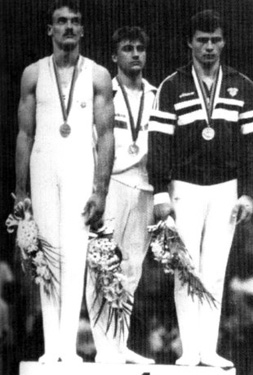

Zsolt Borkai (HUN)
1988 Olympic PH Gold Medalist
1987 World PH Champion

Medal Total
Olympic Games: 1
Gold
World Championships: 1 Gold, 1 Bronze
European Championships: 1 Gold, 1 Bronze
Zsolt was born on August 31, 1965 in Gyor. He joined the Hungarian senior national team in 1983 and retired after the 1988 Olympics. In 1990 he moved to Germany and worked as a coach of junior gymnasts for several years. He eventually returned to Hungary and in 2006 was elected mayor of his hometown. He's married with two children (daughter Petra and son Adam) and is vice president of the Hungarian Olympic Committee.
Competition Results
1981
Jr. ROM-HUN Dual Meet: 3rd AA, 1st PH, 2nd R, 2nd HB
1982
Chunichi Cup: 12th AA
FRG-HUN Dual Meet: 6th AA
Jr. European Championships: 5th AA, 3rd HB, 5th PH, 8th R
Jr. Friendship Tournament (Druzhba): 8th AA
HUN Jr. Championships: 1st AA, 1st PH, 1st R, 1st VT, 2nd FX, 2nd PB
1983
DTB Cup: 3rd AA
European Championships: 12th AA, 4th PH, 4th HB, 7th PB
Jr. Friendship Tournament (Druzhba): 3rd Team, 3rd AA, 2nd V, 2nd HB, 3rd R,
4th PH, 5th FX
World Championships: 6th Team
1984
American Cup: 6th AA
Bordeaux International: 2nd AA
CSSR Spartakiade (Olomouc): 10th AA, 3rd HB, 4th PH
FRG-HUN Dual Meet: 12th AA
HUN Championships: 2nd AA, 1st PH
HUN International: 1st AA
HUN-SWE Dual Meet: 1st Team, 1st AA
Olympic Gala: 4th AA
1985
Chunichi Cup: 10th AA, 4th V, 5th PH
Dynamo Championships of the East Bloc: 2nd AA
European Championships: 9th AA, 1st HB, 3rd V, 5th PH
HUN International: 1st AA, 1st PH, 1st HB, 2nd R, 2nd PB
HUN-ITA Dual Meet: 1st Team, 3rd AA
Tokyo Cup: 2nd PH, 2nd HB, 3rd V
University Games: 15th AA, 2nd HB, 3rd PH
World Championships: 5th Team, 16th AA, 6th V
1986
Belgian Gym Masters: 9th AA, 1st PH, 8th FX
DTB Cup: 1st PH
French International: 1st HB, 2nd PH
Goodwill Games: 25th AA, 2nd HB
World Cup: 17th AA, 6th PH, 6th V, 8th FX
1987
Champions All: 1st AA
European Championships: 25th AA, 4th PH
HUN International: 1st AA
HUN-SUI Dual Meet: 1st Team, 1st AA
Shenyang International: 3rd AA
University Games: 7th AA, 1st PH, 4th PB, 5th R, 6th V, 8th HB
World Championships: 6th Team, 5th AA, 1st PH, 3rd HB, 6th V
1988
Olympics: 6th Team, 1st PH
This page was created on May 21,
2006 and was last updated on February 17, 2020.
© Gymn Forum